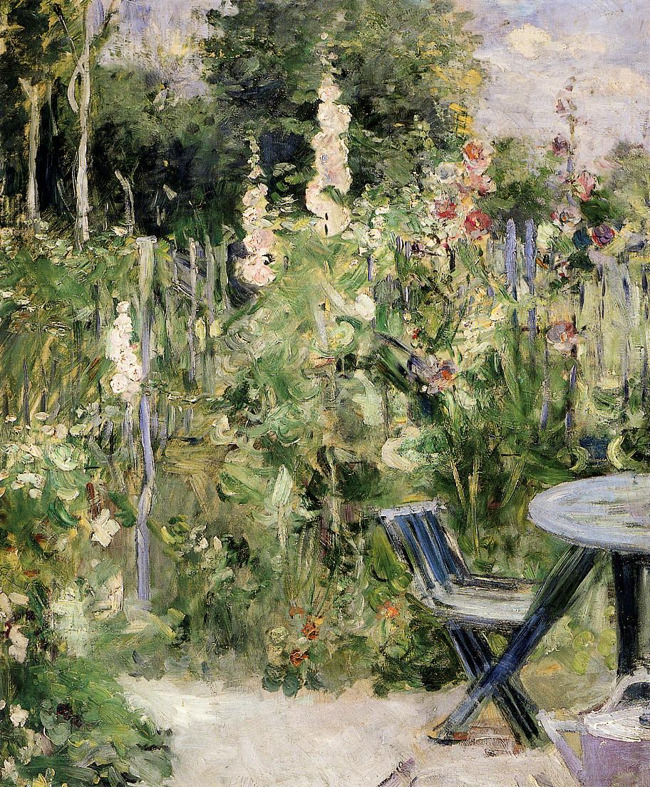

Tags: flowers-and-plants, gardens-and-parks, forests-and-trees
Style: Impressionism
Artist: Morisot Berthe
Title: Roses Tremieres (Hollyhocks)
Year: 1884
Genre: landscape
Categories: park_bench (30.2%); stone_wall (9.3%); worm_fence (8.5%); tripod (4.2%); lakeside (3.4%)
Similar Images: